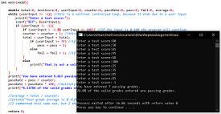

My First Program [C]
I vividly recall when I nervously signed up for my very first programming course.
I had no idea what I was getting myself involved in. Confidently, I attended my first day of class.
With little delay I discovered that my mindset and strong academic habits would take me through this first challenge.
My first program was a simple console application with a textual output.

First Loops [C]
Loops are some of the most powerful sequence of instructions that a computer can be used for.
When I first wrote this, my mind was struggling to grasp the implications of the logic structures I was practicing,
but my imagination was beginning to pull me towards new possibilities.
This is the first program that I wrote that utilized loops.

Database Normalization
Learning how to normalize data into various forms was a challenge. It wasn't immediately intuitive, but I practiced and spent time studying extra-curricular content. I learned how to ensure data integrity and reduce data redundancy. Gaining a healthy appreciation of how important those two ventures are is something that I realized later.

Designing Relational Databases
Undersanding entities is fundamental, but understanding the data, relationships, attributes, and how entities are interconnected is where the power of relational databases is.
Writing Queries [MySQL]
From the first day of my Database Management Systems course my professor was having us write queries. At first, it was confusing, but I quickly gained a respect for the raw power of structured query language.

First Java Program [Java]
The first Java program I wrote was a simple object-oriented program that has Circle and Rectangle objects. The classes contained methods for calculating the area of each shape type.

UML Diagram for Multi-Threaded Race Program
A program that I really enjoyed was where I simulated a race by implementing multi-threading. The 3 runnables continue through the race loop as fast as they can, but there are randomly generated events that can either be advantageous or disadvantageous for the individual racer. The first racer to complete 1000 laps wins the race. For this program all console printouts are also written to a text file.
Multi-Threaded Race Program In Action [Java]
This is the demonstration of the multi-threaded program that was depicted in the UML diagram. It's interesting to observe how the threads will compete for a synchronized object. I particularly enjoyed creating random events that have negative and positive consequences for the thread that experiences them.
Completion Time [Java]
A task that I got very invested in was when I had to make an array of 200,000,000 random numbers between 1 and 10. After that, I had to compute the sum in parallel using multiple threads. The way I approached this problem was test-driven. I wrote unit tests for methods that I wanted to write. After I had my test cases fully devised, then I would proceed to create the methods. This approach required me to almost bring a defensive approach to how I would solve each little problem that I encountered. Through this development process my grasp of the problem and my solution for the problem tightened until the entire problem was solved.

Another Race Program [C#]
This is a different race program that I made in C#. The program takes advantage of some of the excellent tools that Microsoft provides. The program reads and writes each lap instance data to a file and file I/O is initiated by events.

Recursion Vs. Iteration [Java]
An analysis that I enjoyed doing was a comparison between iterative and recursive Fibonacci functions. I learned why recursion may not be the best solution in some scenarios. Perhaps apologetically, here is a paper on how to make recursive Fibonacci competative.

Microsoft SQL [MSSQL]
When I began learning MSSQL, I had a strong understanding of MySQL. Most of the MySQL principles and practices carried over to MSSQL but they do have differences.
RESTful Web Service with Client Portal [HTML,CSS,Java]
This is my RESTful web application. It utilicized basic HTML and CSS for the front end, Jakarta Server Pages to handle page events, Maven for its build process, Jersey to implement REST, Hibernate as a database medium, and it has MySQL database on the backend. I made an Interface Control Document for the interface that exists between the client side and the server side.

Simple Person Management System Web App[HTML,Java]
This is a generic person management system. The frontend uses the Bootstrap library. The use of Bootstrap allowed me to not have to work directly with CSS stylesheets. Thymeleaf expressions are used to access Java based objects and display them on HTML pages. Spring Boot is used to handle the back portion of the application. The CRUD operations are performed on a MySQL database. Like many of my applications I exported it to a WAR file and deployed it onto my Tomcat server.

Amazon Web Services
Here I created a really simple Java program that prints out to the console. I containerized the project and uploaded it to my Docker Hub. After that, I installed Docker on my AWS virtual machine, download the container from Docker Hub, and the application runs on command.
US History Trivia Mobile Application [Flutter]
This is a simple United States trivia mobile application that I created. I used Android Studio to deploy the android virtual machine. The code based was developed using Visual Studio Code.

Amazon Web Services and Distributed Systems
A topic that I am very interested in is learning and applying the methods that Amazon Web Services has used to test distributed system. In particular, I am interested in how Amazon has utilicized the formal specification language TLA+. I explored some of Leslie Lamport's tutorials. Specifically, I was intrigued how his tools could be used to find and express the solution to the Die Hard 3 water jug problem. I did a short video attempting to explain this scenario in TLA+.

Communicating Technologies
A vital skill that I practice is finding ways to simply communicate complicated technologies. What we percieve to be complexity is usually a long linear path of simple steps. Similar to mathematics, finding ways to reduce unnecessary complexity in how we communicate is key.
Unit Testing
In this slideshow I try to inspire others to adopt a heightened degree of rigor with respect to how they view their own code. Unit testing could be viewed as the materialization of the previously stated sentiment.

Pipeline Project
This was a challenging project that required me to combine multiple different technologies in order to achieve a singular goal, which is a deliverable application. The pipeline uses Eclipse IDE, Maven, TestNG, Github, Jenkins, and Docker. The focus was not on the application itself, but rather it was about creating the pipeline that presents a deliverable at its endpoint.
Currency Conversion Project
Currency Converter Server
The client-server application begins by starting up the server. Before a client application can connect to the server, the server must first validate the data entries in the database. This can take some time depending on how much historical data must be generated.

Currency Converter Main Window
The second step is to run the client-side interface. The client doesn't conduct any calculations. It is merely used to display relevant data to the user. In order for the client to display data it must first send a data request object to the server. The server will then access the specific data from the database and send it to the client interface where it is displayed to the user.

Currency Converter Exchange Rate Chart
The Currency Converter Main Window will tell the user how much the exchange rate is today, but it cannot guide the user to determine if making an exchange is a good decision. In order to guide the user to make an educated decision, the application will chart historical data trends. The individual charting points are the averages for each specific month. Viewing this data can aid a user in viewing a currencys historical trend.

Currency Converter Rate of Change Chart
Sometimes the mere historical trend that is displayed in the Exchange Rate Chart does not give a user the entire picture. For the vast majority of use cases the Exchange Rate Chart should provide sufficient information to the user. Viewing how a given currencys rate of change trendline is can reveal some extra details. I also did a Dynamic Profiling document on the application statistics.


{kind=link}
{kind=link}
{kind=link}
{kind=link}